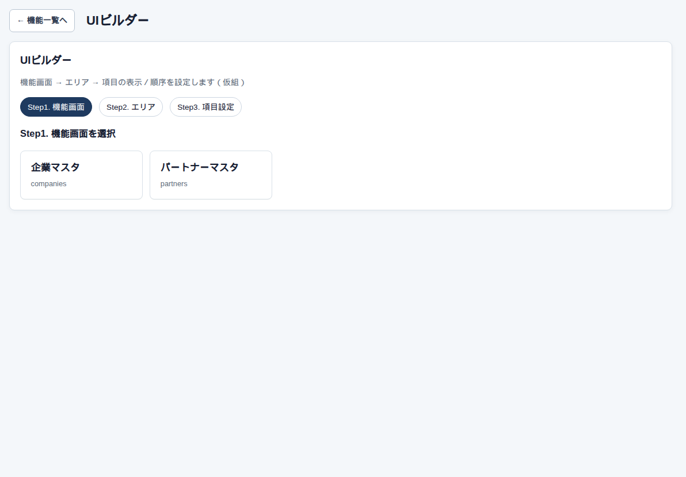

設定 → UIビルダー
UIビルダー
この画面の役割
主な一覧の列の出し方を、会社でひとつにします。管理者とシステム担当者が保存すると、全員の同じ一覧に効きます。

使い方
対象はランチャー各機能の主一覧です。請求と支払は一覧が2つ、入出金は予定一覧です。
気をつけること
先払のマトリクス、カレンダー、日報の月次グリッド、詳細の中の小さい表、マスターの小口一覧は対象外です。個人ごとの列保存ではありません。
設定 → UIビルダー
主な一覧の列の出し方を、会社でひとつにします。管理者とシステム担当者が保存すると、全員の同じ一覧に効きます。

対象はランチャー各機能の主一覧です。請求と支払は一覧が2つ、入出金は予定一覧です。